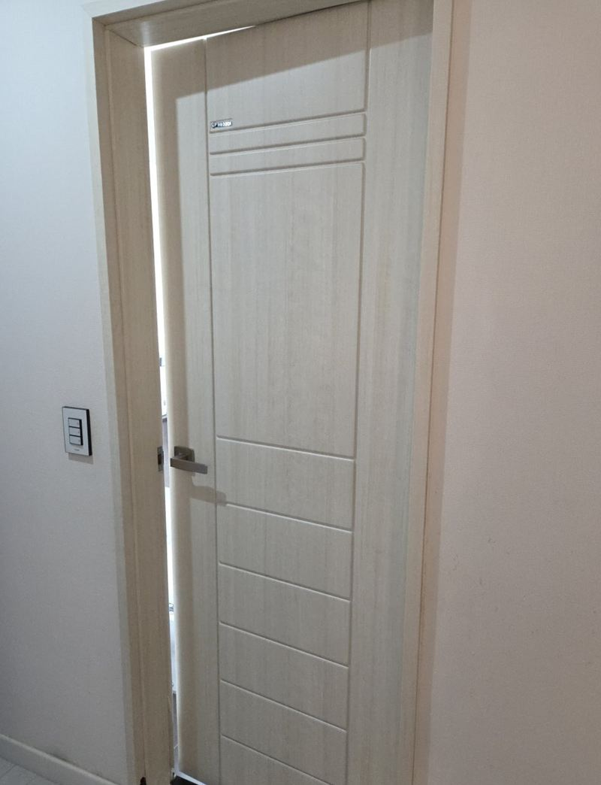
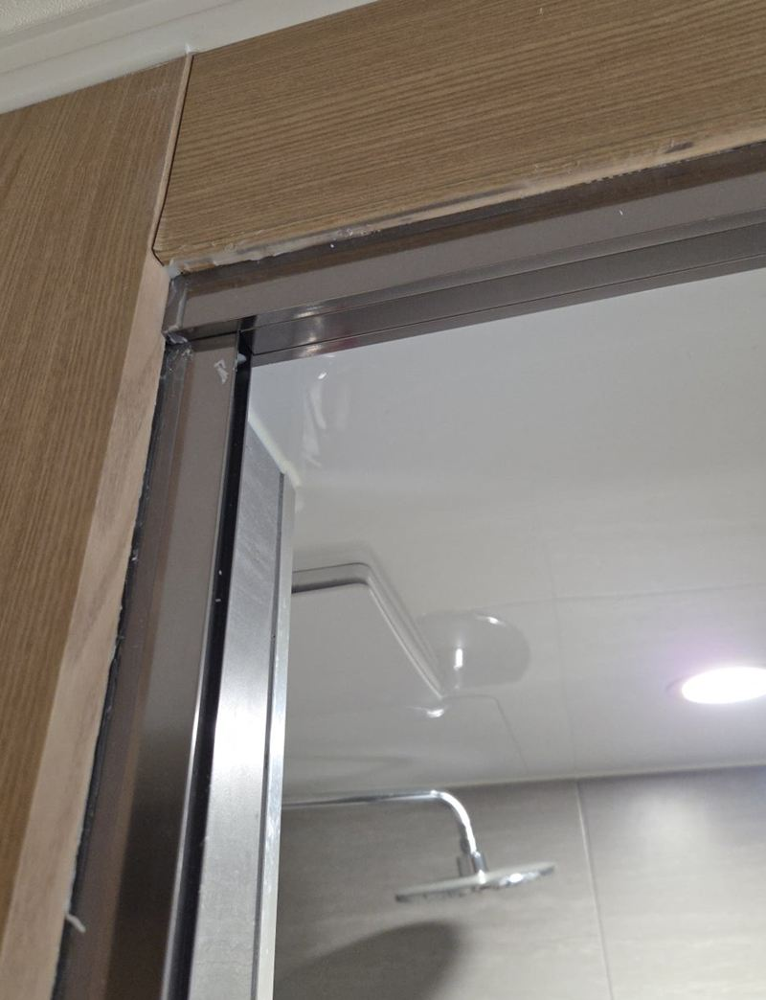
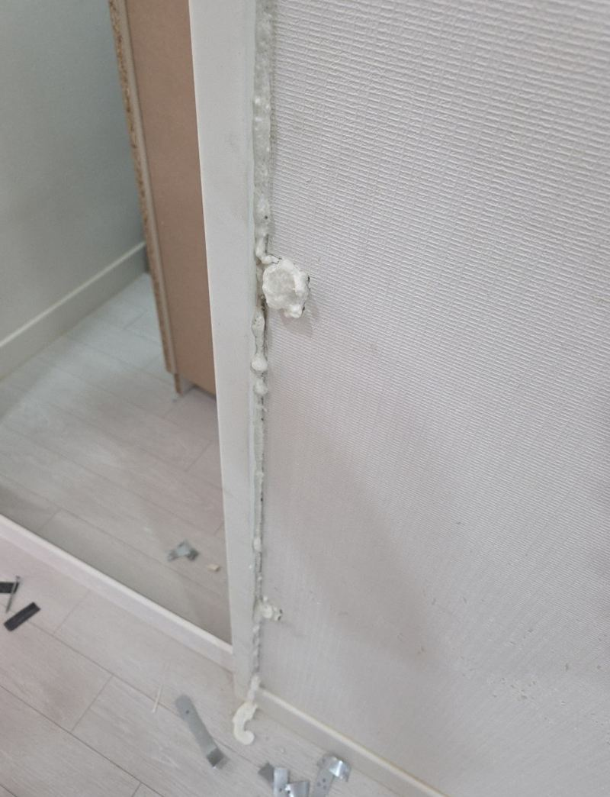
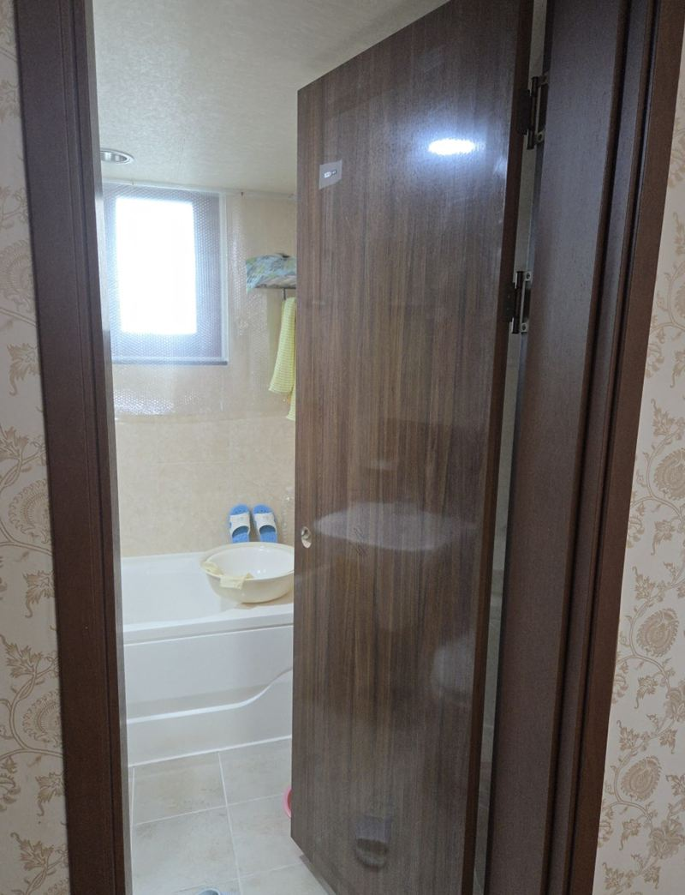
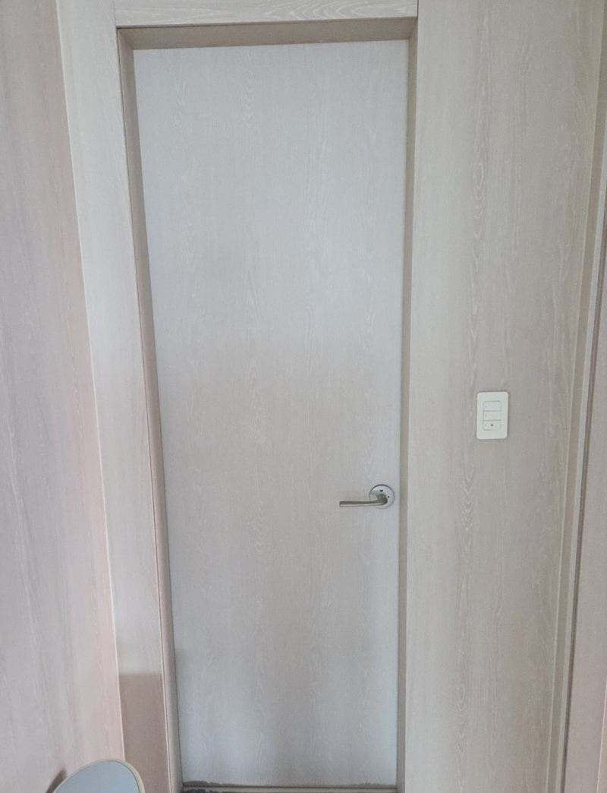
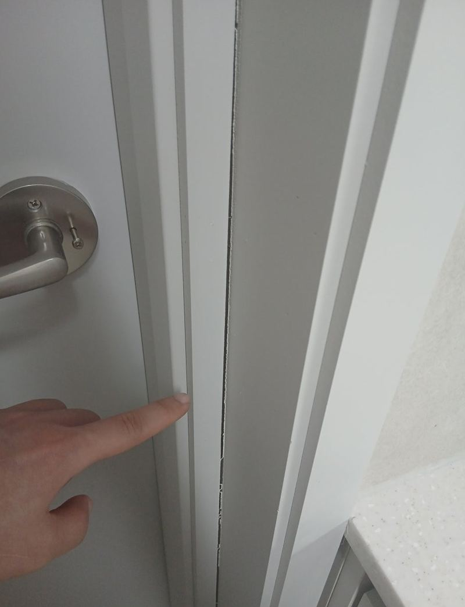
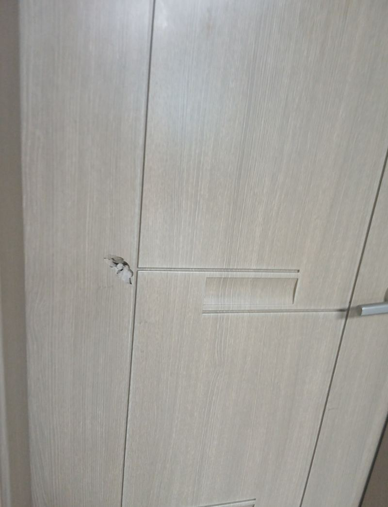
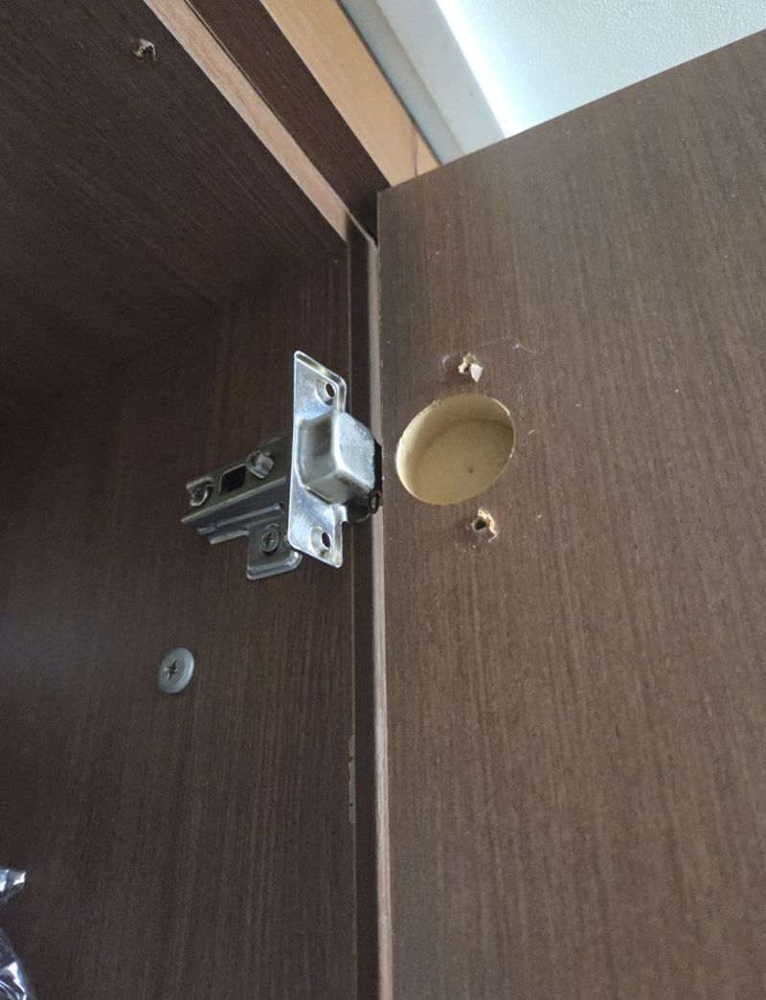

홈 › 방문·욕실문
방문·욕실문 교체 비용
문짝만 바꾼 현장들
욕실문은 물을 먹으면 아래부터 부풀고, 방문은 아이들이 지나가며 찍고 패여요. 이럴 때 문틀까지 뜯는 큰 공사를 떠올리시는데, 대부분은 문틀을 그대로 두고 문짝만 바꾸거나 고쳐서 해결돼요.

고치면 되는 문, 바꿔야 하는 문
| 상태 | 보통 이렇게 해요 |
|---|---|
| 문이 처지고 바닥에 닿아요 | 경첩 나사구멍 보강, 힌지 조정 |
| 닫을 때 딱딱 소리가 나요 | 문틀 틀어짐 확인, 걸쇠·경첩 위치 조정 |
| 표면이 찍히고 패였어요 | 부분 보수 또는 문짝 교체 |
| 아래가 불어 터졌어요 | 문짝 교체(욕실용 자재 권장) |
| 손잡이가 헛돌아요 | 손잡이·래치 교체 |
문짝 교체, 견적에 들어가는 것
문 크기와 두께, 경첩 타입(욕실문은 A타입·B타입처럼 힌지 방식이 달라요), 손잡이 타공 위치, 그리고 문 색상을 맞추는지가 비용을 정해요. 문 옆면에 붙은 라벨이나 문 두께를 찍어 보내 주시면 맞는 문을 찾는 데 도움이 돼요.
지역별 방문·욕실문 현장

금천 욕실문 A타입 B타입 힌지 차이와 교체 방법서울 금천
용인 기흥 물에 불은 화장실문 교체와 석고 복원용인 기흥
화성 MDF 욕실문 필름 벗겨짐, 문 교체 비용화성
평택 강제로 연 욕실문 파손, 문짝 교체 방법평택
용인 기흥 문틀 틀어짐 소리 원인과 해결 방법용인 기흥 · 블로그 현장기 ↗
경기광주 빌라 방문 파손 교체, 보험 처리 가능할까경기광주 · 블로그 현장기 ↗ 경기광주 부풀어 오른 화장실문 교체 방법경기광주 · 블로그 현장기 ↗
경기광주 부풀어 오른 화장실문 교체 방법경기광주 · 블로그 현장기 ↗
용인 수지 문 처짐 수리, 경첩 나사구멍 보강 방법용인 수지 · 블로그 현장기 ↗
방문 교체 질문
빌라 방문이 파손됐는데 보험 처리가 되나요?
가입하신 보험 조건에 따라 달라요. 보험사에 낼 수 있게 작업 전후 사진을 남겨 드릴 수 있어요.
문틀에 생긴 곰팡이·부풂도 손보나요?
문짝과 함께 문틀 아래쪽 석고나 몰딩을 복원한 현장이 있어요.
문 전체 사진과 상한 부분, 경첩 쪽을 찍어서 보내 주세요.
전화 상담 010-4517-9872